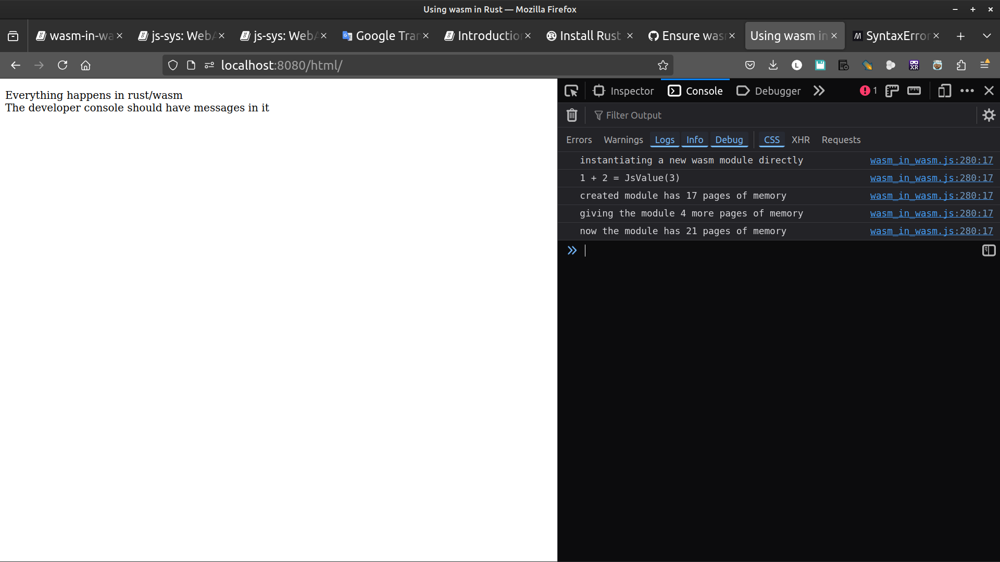

js-sys: WebAssembly in WebAssembly
Using the js-sys crate we can instantiate WebAssembly modules from inside WebAssembly modules!
_ [wasm-bindgen Guide]
Original [wasm-bindgen example]
PART I. Make it run
Using wasm in wasm example
1. file structure & crate type
cargo new wasm-in-wasm --lib
cd wasm-in-wasm
mkdir -p www/html www/js
cargo add wasm-bindgen
edit Cargo.toml to add crate-type
[lib]
crate-type = ["cdylib",]
2. make the wasm file to be used by wasm-in-wasm later
We want to use webassembly in our rust code.
First we shall generate a wasm file called add.wasm
But instead of creating another crate just to generate that wasm file,
we shall temporarily use src/lib.rs to generate add.wasm. Then we'll delete that lib.rs code and continue our project with our real code in lib.rs.
// temporary src/lib.rs to generate our add.wasm file
use wasm_bindgen::prelude::wasm_bindgen;
#[wasm_bindgen]
pub fn add(a: usize, b: usize) -> usize {
a + b
}
Build the wasm file with the out-name set to add
wasm-pack build --release --target web --out-name add --out-dir www/pkg
Since this wasm file is on the "server side", we can move it in to src and rename from
www/pkg/add_bg.wasm to src/add.wasm
and clean the project for our real code
mv www/pkg/add_bg.wasm src/add.wasm
cargo clean
rm -fr www/pkg
3. Html and Js files
In www/html/index.html we have
<!DOCTYPE html>
<html>
<head>
<meta content="text/html;charset=utf-8" http-equiv="Content-Type"/>
<title>Using wasm in Rust</title>
</head>
<body>
<p>Everything happens in rust/wasm <br/ >
The developer console should have messages in it</p>
<script type="module" src="../js/index.js"></script>
</body>
</html>
and in www/js/index.js
import init from "../pkg/wasm_in_wasm.js"
init();
/*
//async is handled directly in lib.rs
async function run() {
const wasm = await init();
}
run();
*/
Note:
The build outputs the file is wasm_in_wasm.js not wasm-in-wasm.js
we've seen that before (ie: the crate wasm-bindgen is used as wasm_bindgen)
4. Everything happens in src
First, we need to add the two new crates js-sys and wasm-bindgen-futures
cargo add js-sys
cargo add wasm-bindgen-futures
we bring them into scope in lib.rs
#![allow(unused)] fn main() { // src/lib.rs use js_sys::{Function, Object, Reflect, WebAssembly}; use wasm_bindgen::prelude::*; use wasm_bindgen_futures::{spawn_local, JsFuture}; // lifted from the `console_log` example #[wasm_bindgen] extern "C" { #[wasm_bindgen(js_namespace = console)] fn log(a: &str); } macro_rules! console_log { ($($t:tt)*) => (log(&format_args!($($t)*).to_string())) } const WASM: &[u8] = include_bytes!("add.wasm"); // path relative to lib.rs async fn run_async() -> Result<(), JsValue> { console_log!("instantiating a new wasm module directly"); let a = JsFuture::from(WebAssembly::instantiate_buffer(WASM, &Object::new())).await?; let b: WebAssembly::Instance = Reflect::get(&a, &"instance".into())?.dyn_into()?; let c = b.exports(); let add = Reflect::get(c.as_ref(), &"add".into())? .dyn_into::<Function>() .expect("add export wasn't a function"); let three = add.call2(&JsValue::undefined(), &1.into(), &2.into())?; console_log!("1 + 2 = {:?}", three); let mem = Reflect::get(c.as_ref(), &"memory".into())? .dyn_into::<WebAssembly::Memory>() .expect("memory export wasn't a `WebAssembly.Memory`"); console_log!("created module has {} pages of memory", mem.grow(0)); console_log!("giving the module 4 more pages of memory"); mem.grow(4); console_log!("now the module has {} pages of memory", mem.grow(0)); Ok(()) } #[wasm_bindgen(start)] fn run() { spawn_local(async { run_async().await.unwrap_throw(); }); } }
5. build and serve
wasm-pack build --target web --no-typescript --out-dir www/pkg
http www
open index.html
firefox http://localhost:8000/html/

PART II. Understand the Code
Understand the Code
#![allow(unused)] fn main() { use js_sys::{Function, Object, Reflect, WebAssembly}; }
- [Struct js_sys::Function]
- [Struct js_sys::Object]
- [Module js_sys::Reflect]
- [Module js_sys::WebAssembly]
#![allow(unused)] fn main() { use wasm_bindgen::prelude::wasm_bindgen; #[wasm_bindgen] pub fn add(a: usize, b: usize) -> usize { a + b } }
The add.wasm would typically be used in a js file
since we made it available #[wasm_bindgen].
But this time we are going to use it directly in our Rust code.
#![allow(unused)] fn main() { const WASM: &[u8] = include_bytes!("add.wasm"); // path relative to lib.rs }
Remember add.wasm is a binary.
WebAssembly::instantiate_buffer(WASM, &Object::new())
- JsFuture & WebAssembly::instantiate_buffer
#![allow(unused)] fn main() { let a = JsFuture::from(WebAssembly::instantiate_buffer(WASM, &Object::new())).await?; }
[wikipedia: Futures_and_promises]
- WebAssembly::Instance & Reflect
#![allow(unused)] fn main() { let b: WebAssembly::Instance = Reflect::get(&a, &"instance".into())?.dyn_into()?; }
- WebAssembly::Instance & .exports()
#![allow(unused)] fn main() { let c = b.exports(); }
- dyn_into::<>
#![allow(unused)] fn main() { let add = Reflect::get(c.as_ref(), &"add".into())? .dyn_into::<Function>() .expect("add export wasn't a function"); }
- Struct js_sys::Function & call2()
#![allow(unused)] fn main() { let three = add.call2(&JsValue::undefined(), &1.into(), &2.into())?; }
- js-sys WebAssembly::Memory & .grow()
#![allow(unused)] fn main() { let mem = Reflect::get(c.as_ref(), &"memory".into())? .dyn_into::<WebAssembly::Memory>() .expect("memory export wasn't a `WebAssembly.Memory`"); }
grow memory
#![allow(unused)] fn main() { console_log!("created module has {} pages of memory", mem.grow(0)); console_log!("giving the module 4 more pages of memory"); mem.grow(4); console_log!("now the module has {} pages of memory", mem.grow(0)); }
- spanw_local
#![allow(unused)] fn main() { #[wasm_bindgen(start)] fn run() { spawn_local(async { run_async().await.unwrap_throw(); }); } }